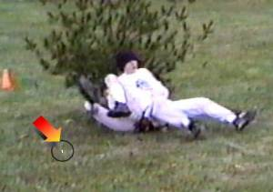
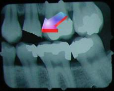

The Latest Headlines from Cork Bowl
14
Teams Announced for Cork Bowl 14
August 30th – The teams for Cork Bowl 14 were announced today in a news conference at Corklestick Park. For the seventh year in a row, the Cork brothers, Chris and Patrick, will find themselves playing on the same team. "It's become almost guaranteed we'll put them together," commented Commissioner Patrick Cork. "We have started quite a little family rivalry between the two of them and the Truitts." The Corks have gone 4-2 over the previous six contests as teammates. The Truitts, Willy and Reggie, will be together for the 4th year in a row. They are 2-1 over the past three seasons.
The teams will look very similar to the ones put on the field for last year's competition. Joining Chris and Patrick will be two teammates from last year's winning Grisons team - MVP winner Greg Howard and Kevin Ryan. The one change will be at the quarterback position where Tony Cork will make yet another return from a brief retirement. They lost Kirby Newell to free agency and with him, the defensive replacement that goes with him. It has not been decided yet whether or not Tony will be using a defensive replacement for this year's game. Joining the Truitts will be a pair of teammates from last year's team as well as Brooks Wilson and Ryan Tomlinson will try to atone for last year's defeat. Having lost Josh Williamson from last year's team, they hope to rebound with Kirby Newell leading them as quarterback. Newell will be replaced on defense by Jake Hoalt who made his first Cork Bowl appearance last year when Reggie went down in the 2nd quarter. "We had a very competitive game last year, especially considering we lost Reggie early in the game," remarked Willy Truitt. "Having Kirby at QB and adding me to our already stacked receiving corps is a huge boost."
"I see no reason why this year's game can't be another classic," added Commissioner Cork. "If you look through the past 7 years, we have had so many close games decided by two touchdowns or less. Take away the freakish Cork Bowl 12 blowout, and the average margin of victory since 1997 is just under 14 points a game (13.8). Considering we play for 100 minutes, that's pretty amazing. We have a lot of consistency in the rosters this year (8 players are on the same teams as last year) which should result in elevated play."
"The biggest question mark is probably going to be Coach under center," added Greg Howard. "Last time he played he was run ragged by the blitzers and never had time to throw. With the no-rush rule in effect now, he could be extremely effective - just like he was in the 2nd half of last year's game." Cork set a Cork Bowl single-game record in relief duty last year completing 70% of his passes (35-for-50). "If he has time to set and throw, there's nobody better."
Cork Bowl 14 will take place at Corklestick Park on Saturday, December 4th. The ceremonial coin toss is tentatively scheduled to be held at 11:15 a.m.
Team Names Released for Cork Bowl 14
September 13th – The two teams have decided on their names for Cork Bowl 14.  The majority of last year's Zo'ril is back, but will be led by Kirby Newell at quarterback this time around. This year they will be known as the "Parameciums". "I think going back to the basics is going to help us out," remarked Newell. "Being one-celled animals should really help us keep things simple." Joining Newell will be Willy and Reggie Truitt, Brooks Wilson, Ryan Tomlinson and Jake Hoalt. "I'm not so sure that a protozoan that relies solely on the use of its cilia to move can be successful in Cork Bowl," opined Chris Cork.
The majority of last year's Zo'ril is back, but will be led by Kirby Newell at quarterback this time around. This year they will be known as the "Parameciums". "I think going back to the basics is going to help us out," remarked Newell. "Being one-celled animals should really help us keep things simple." Joining Newell will be Willy and Reggie Truitt, Brooks Wilson, Ryan Tomlinson and Jake Hoalt. "I'm not so sure that a protozoan that relies solely on the use of its cilia to move can be successful in Cork Bowl," opined Chris Cork.  "I do know that their leader, Mr. Newell fits the definition of a paramecium well though with his large oral groove."
"I do know that their leader, Mr. Newell fits the definition of a paramecium well though with his large oral groove."
As for the team of Corks, they will be the "Dingoes". "The Bushdogs were highly successful in Cork Bowl 10," stated Patrick Cork. "We feel going back to the scavenger dog creatures is a good idea. Plus, any animal mentioned in a Seinfeld episode has to be respected. Using lines like 'Maybe the dingo caused you to throw that interception' will certainly be enough to get inside Newell's head." Patrick will be joined by brother Chris at receiver and father Tony at quarterback. Greg Howard and Kevin Ryan are also on the team that looks to repeat last year's 105-91 victory.
Field Flipped - Will Run East-West
September 19th – After 13 years of the Corklestick Park field running north-south, the league confirmed on Saturday that the field will be flipped to run east-west for Cork Bowl 14. There was rampant speculation of the field flip all offseason, but the league remained silent on the issue until this weekend. "Obviously we weren't going to inform anyone until the decision was 100% final," commented Commissioner Patrick Cork. "We came to the conclusion that there was no way we could continue playing the traditional way - nothing else could be done." The new field will remain the current 37x34 dimensions and will stretch length-wise about 15-20 feet from the road on the east side of the stadium all the way to where the first base line rests for baseball on the west side. Width-wise, it will start 15 feet from the garage on the south end to approximately 20 feet inside of the gravel drive on the north end.
The events that prompted the decision date back two years when a flag pole was positioned just to the north of the garage in the south endzone. Although the flagpole was in play, it did not have any more impact than the basketball goal near the driveway had in previous years. However, this offseason, a flower garden was installed around the base of the flag pole stretching another 5-8 feet into the field of play. "There's no possible way we can use that area as part of the endzone any longer," added Cork. "There is a brick border around the flowers and the diameter around the flag pole is at least 10 feet. It's a disaster waiting to happen." In addition to the new brick-bordered garden, a bush was planted where the garage and dog pen come together causing yet another disturbance in the south endzone.
Many outside of the league believed the field should have been flipped years ago, but the league blew off all criticism. "The complaints we heard were that the garage was a dangerous object in the field of play, the back lines of both endzones were either gravel or concrete drives, and the pine trees were too close to play on the east sideline. Although all those statements are true, they also gave Cork Bowl a uniqueness that no other football game offered. How many other players can catch a touchdown pass and run face-first into a garage? If we had been playing the other direction, Greg wouldn't have a signature highlight play."
The field was originally drawn up to go north-south for a number of reasons. "First, there used to be a huge oak tree on the west end of the field - where first base is for baseball games," added Cork. "There were acorns, sticks and all kinds of other objects all over the west half of the field so if we had played that direction, the field could only have been about 25-30 yards long. Also, there used to be an apple tree near the dog's pen where the corner of the south endzone currently is. We had no other choice than to play the way we have for the past 13 years. Now that those trees are gone, there is no reason why we can't flip the field." There are a number of advantages that the new field will have. It will be much more open, especially in the endzones, where the back line will no longer be a road, but a painted line. Also, both endzones will be able to be measured to be exactly the same size. Because the back lines used to be a road and a driveway/garage, the endzones did not have the same dimensions. The pine trees that used to protect the southeast corner of the endzone will no longer be close to the field either. "We about lost Patrick in the trees in Cork Bowl 8," remarked Tony Cork. "I led him too much and he crashed into the tree trying to catch the ball. I don't think he'll miss the trees being that close to the field." One other upgrade to using the new field direction could come in the media area. "We are looking at the possibility of putting the announcers and cameraman up on the garage this year," stated the Commissioner. "Not only would it give them a higher, better view of the action, but they could sit down and relax instead of standing on a ladder or in the bed of a truck. Once we decide who will be calling this year's game, we'll discuss that option with them." Recent rumors have surfaced that Eric Dean may decline the invitation to announce his third consecutive, and fourth overall Cork Bowl.
To view Corklestick Park, click here.

September 23rd – In a shocking move, the Dingoes have announced that Brian Garrard will serve as the defensive replacement for Tony Cork in Cork Bowl 14. "I'm flabbergasted," said a confused Kirby Newell. "I thought they could have gone a lot of different ways, but Garrard? I'm speechless." Garrard, who hasn't played a down in Cork Bowl in nearly 12 years, was eager to accept the invitation from team captain Patrick Cork. "It took me a long time to come back to the site of the incident, but I did last year," remarked Garrard. "It was just too exciting of an atmosphere not to want to come back again, but this time as a player."
Garrard's last appearance in Cork Bowl was in Cork Bowl 2. His well-publicized chipped tooth, courtesy of a Reggie Truitt tackle, knocked him out of that game and he hasn't played since. "To go through what Brian went through it's no surprise he hasn't played again after that game," added Patrick. "But I had to ask. He did a great job as our offensive/defensive coordinator last year so you could see he knew what was going on with the game. We had an open spot, we had a willing party, so why not? To get another founding father back into the game is great." Another founding Cork Bowler, Brooks Wilson, returned last year after a 7-year absence. Although Garrard will only be playing a defensive role, the impact he could have on the game is enormous. "(Defensive replacement) Trimble was one of the main reasons why we were able to win last year," replied Chris Cork. "He was a huge asset on the defensive side of the ball. Knowing Garrard, he'll be really fired up come December 4. Tomlinson better beware."
"We really have no idea what to expect. We had the option of signing Garrard or letting the Old Guy play both ways," added Patrick. "The old QB didn't feel he would be able to play both ways with his gimpy knee, plus I think Garrard will be just fine. We'll throw him out wide on Tomlinson and he'll be in his head all day. My only advice to Brian is to wear a mouthpiece this year so we don't have another incident. He shouldn't be getting tackled, but if he picks off a pass and takes off down the sideline, I can only imagine the emotions he'll be feeling if Reggie is bearing down on him."
"What's amazing is that nobody had ever missed any significant game time since Garrard's injury, then they have the big 'This Date in History" story a couple years ago on the website and Patrick gets hurt then Reggie gets hurt last year," remarked Willy Truitt. "I'm beginning to think the curse of Garrard may have been awakened with that story after a 10-year slumber. Maybe him returning will mean we'll all stay healthy this year."
For more information about Garrard's career and his injury, check out the archived story from the Cork Bowl 12 news section.
Garrard and Tomlinson Under Fire
This is the first installment in what will likely be a continuing story on the Garrard/Tomlinson Service Issue
October 4th – In what could shake up this year's Cork Bowl in a way never seen before, both teams have seen key members under siege in recent days with rumors regarding their Cork Bowl service swirling. The first reports hit the mainstream media over the weekend when a group calling themselves the "Cork Bowl Veterans for Truth" brought forth evidence showing that Brian Garrard never actually suffered a chipped tooth in Cork Bowl 2. "These allegations are absolutely absurd," responded a miffed Garrard. "I served in Cork Bowl honorably and to have my injuries questioned is disrespectful and unprofessional." The Veterans group had a petition signed by 4 former players expressing, "a sense of betrayal and deception on Garrard's part for exaggerating what was believed to be a superficial wound on the football field in order to receive an early release from the game. We feel he is unfit to play in Cork Bowl." Garrard is attempting a comeback this year after missing the last 11 Cork Bowls.
As for the Parameciums, Ryan Tomlinson's service for the past few years in Cork Bowl has also been under investigation. A group calling themselves, "Illinoisans for Honesty" released this statement: "While Ryan Tomlinson claims he served in Cork Bowl from November 1999 - November 2003, no one from the game — his coaches, fellow players or fans — remembers seeing him fulfill his service and he cannot provide any memories or acquaintances from the time he claims he was in the game." Tomlinson scoffs at the notion he hasn't fulfilled his Cork Bowl duties. "You have seen the game tapes yourself. Obviously I was there." In response to Tomlinson's statement, several members of the activist group answered by adding, "Yes we have seen the tapes of previous Cork Bowls. We don't see Tomlinson doing anything on the tapes. We are offering a reward for anyone that can prove they actually played in the previous 4 Cork Bowls with Tomlinson."
Because the news just broke this weekend, this story is developing and will be ongoing indefinitely.
Part 2 - Garrard and Tomlinson Under Fire
This is the second installment in what will likely be a continuing story on the Garrard/Tomlinson Service Issue
October 7th – More information has come out in recent days regarding the service records of Brian Garrard and Ryan Tomlinson. In Garrard's case, the Dingoes have released copies of sworn statements from several players that were competing in Cork Bowl 2 when Garrard was knocked out of the game with a chipped tooth. One supporter, Dingo receiver Patrick Cork, commented, "Anyone that saw the vicious hit Garrard took should have no doubt he sustained a serious injury. It's pretty obvious that he should have left the game after such an experience." Garrard has long claimed that him using his injury to leave Cork Bowl was his own idea, however those questioning Garrard's injury have gone so far as to say he was oriented towards his personal, rather than team's goals and objectives and his teammates thought his minor injury was an opportunity to get rid of him for good. One anonymous source said, "They knew how the system worked and didn’t want him in Cork Bowl any longer although you'll never hear any of them admit to it." Garrard's camp responded by saying, "Nothing could be further from the truth. Ask any player that played with Garrard during his service in Cork Bowl and they'll tell you they had the upmost respect for him as a person and as a player. These claims are being made from people who never fought on the field alongside Brian Garrard."
In Tomlinson's case, the detractors continued to hammer away at Tomlinson's service record in recent Cork Bowls. "He's been listed on the roster, he's been included in the previews, but Tomlinson has never shown up for a game," announced an unidentified source. "I would consider him AWOL for the past 4 years." Another wrinkle in the developing saga is that Tomlinson's older brother, Scott, may have been responsible for getting him into Cork Bowl in the first place 7 years ago. According to some reports, Tomlinson leap-frogged a waiting list of at least a dozen potential participants when he made his debut in Cork Bowl 7. "Scott was a pretty smart man, and some feel he used his superior intellect and connections to get Ryan into the game when he probably didn't deserve to be there ahead of several others," added the source. "Tomlinson was signed into Cork Bowl despite barely passing an aptitude test, scoring much lower than a number of other players that most people feel were more qualified." Tomlinson's agents have since released what they say are all of the game records available in Tomlinson's defense. His attorney, the honorable Justin Massey, said, "He had 5 receptions last year, 3 the year before, 4 the year before that - how could he be AWOL and catch a dozen passes in the past 3 years? These claims are baseless and add more evidence to the fact that Tomlinson's opponents will do anything to get him out of the game."
Part 3 - Garrard and Tomlinson Under Fire
This is the third installment in a continuing story on the Garrard/Tomlinson Service Issue
October 12th – After over a week of fielding questions surrounding his early exit from

Cork Bowl 12 years ago, Brian Garrard and his advisors finally made his personal files available to the public on Tuesday. "We are hoping this will end all speculation about Garrard's service in Cork Bowl," commented Garrard spokesman Brandon "Bulldog" Boyd. "I was there on the sideline giving the injury report and saw how much pain he was in. It's disappointing it had to come to this, but there wasn't much else we could say or do without making his entire record public. I think the documents and photos included in his record will remove any doubt that his injury was indeed severe and his exit from the game was honorable."The photo drawing the most attention is a still-shot taken from actual game footage of Garrard being tackled by Reggie Truitt in Cork Bowl 2. There is a white object that can be seen in the picture that appears to be

a fragment of Garrard's tooth. The other major development is the dental x-ray of Garrard's mouth taken the day of the injury. It shows an obvious chip in one of the teeth. "It's not difficult to see that this was legitimate from the start," stated Garrard. "I am not happy about opening up all of my private records to the public, but if it will put this whole situation behind us then maybe it will be worth it." A dentist's bill, more x-rays and insurance receipts were also included in the files.As for Tomlinson, despite the stats and game tapes that were presented in his defense, a number of skeptics still don't believe Tomlinson was at Cork Bowl the past 3 years. "I've been to 5 games in a row and I can only remember seeing Ryan play a couple times," remarked long-time fan Akeya Harper. "I was usually too busy watching the dogs or listening to Coach Cork announce the game to pay much attention, but I think I would have remembered seeing him do something memorable during that time, but I don't." "All this controversy about Garrard and Tomlinson really doesn't matter," responded Chris Cork. "Come game day, Garrard will completely shut Tomlinson down. Assuming of course he can find him on the field."
Endzone Celebrations at All-time Low
October 19th – There has been some recent concern from several members of the Cork Bowl hierarchy regarding the lack of endzone celebrations in recent years. Statistics show that from 1994-1998, 28% of all touchdowns scored were followed by some sort of endzone celebration. However, from 1999-2003, that number had plummeted to 6%. "It is a little concerning considering the personalities we have in the game," remarked Commissioner Patrick Cork. "There are a lot of factors that lead to that low number, the most important one being Kirby Newell's absence from the field for 4 of the last 5 years."
Newell, who played from Cork Bowl 4 through Cork Bowl 9 before suffering a then-career ending leg injury, was the top celebrator in the study (Newell returned for Cork Bowl 13 playing quarterback). Newell was rated as celebrating an astonishing 84% of his touchdowns with some sort of choreographed routine - far and away the highest on the list. Newell's windshield wiper dance performed in the snow of Cork Bowl 5 was rated the #1 celebration in Cork Bowl's history. "I've always prided myself not only playing at a high level, but performing at one too," added Newell. "A lot of the players in this league just don't know how to strut their stuff after they score. It's pretty disappointing to be honest."
Another factor that has caused a drop in the celebrations is the age of the participants. "I don't think anyone is expecting to see Coach Cork doing any endzone celebrating, but we should definitely have more than we do. As the players get older, they get more out of shape and any added use of energy could prove costly in the late stages of the game," remarked an unnamed player. "Some of the guys barely make it through the game standing so it's hard to imagine they'd use the little energy they had left to perform a dance routine in the endzone." Newell, however, is bound and determined to get the celebration level back to a respectable level this year. "I tried to do some celebrating last year, but when you're the quarterback it's hard to do because the focus is on the receiver. Maybe we can get some team celebrations planned in the next couple of months that will get the crowd going. People don't come just to watch football, they come to see some show-boating."
Unlike most other professional leagues, Cork Bowl promotes the endzone celebration instead of penalizing for it. "Fans eat that stuff up," added Willy Truitt. "We've always been a fan-friendly game so we should continue to go out of our way to give the fans what they want. NFL players have been whining for years that the league takes away their creativity. Well, our league wants us to do something so I think we have the responsibility to come up with some good stuff for this year's game. With Kirby as our team leader, I'm sure he'll have something up his sleeve."
Red Sox Win Means Tomlinson to Win MVP?
October 28th – With the Red Sox World Series win Wednesday night under a lunar eclipse, a number of major world events were set into motion, including the potential of Ryan Tomlinson winning the MVP award at this year's Cork Bowl. "I saw a pig fly by my window at work, and I heard someone tell me that it was starting to get a little chilly in hell," commented Cork Bowl veteran Willy Truitt. "If monkeys start flying out of my rear end, then we're in big trouble."
As temperatures crept into the high 30's in the underworld on Wednesdsay, the Vegas odds of Ryan Tomlinson winning the MVP award plummeted from 500-to-1 all the way down to 2-to-1. "It's one of the most amazing things we've seen in Vegas - ever," reported Vegas insider Bill Buckner. "I guess once the Red Sox won the series, everybody thought this may be the year for Tomlinson to do something special too. If I were them, I'd invest my money in other places though. It took the Red Sox 86 years to win another World Series. This is only Tomlinson's 8th Cork Bowl."
Paramecium quarterback Kirby Newell is a believer in the correlation between a Boston title and a Tomlinson MVP performance. "If I can win Greg Howard an MVP last year, it's not too far-reaching to think I can do the same for Tomlinson this year," remarked Newell. "I understand it would be one of my greatest athletic accomplishments, but the Red Sox just proved anything is possible, although we are talking about Tomlinson here...." Tomlinson responded with confidence adding, "People have ripped on the Red Sox for decades about how they can't pull it off when push comes to shove. I've heard the same things said about my Cork Bowl career. This is a chance for me to follow in the footsteps of the Red Sox and pull off the impossible. Plus I've got Brian Garrard guarding me so that should help."
Jay Jared Returning to Booth for Cork Bowl 14
November 4th – It took 6 years, but Jay Jared will be back in the booth for his sophomore season announcing Cork Bowl 14 this December. "I'm honored to have this opportunity," remarked Jared. "I had a blast the first time I announced and it's great that the league has the confidence in me to do it again." Jared, who called the action during Cork Bowl 8, will replace Hall of Famer Eric Dean. Dean was the first full-time announcer in Cork Bowl when he braved the snow and freezing temperatures to call the action in Cork Bowl 5. Dean also called Cork Bowls 12 and 13, but will be unavailable for this year's contest after signing on with the NFL Network. "Cork Bowl has meant everything to my professional career," responded Dean. "I wouldn't have been able to get to where I am without my experience in Cork Bowl. Maybe things will work out for me to get back for the 15th anniversary game next fall - I've heard the league has quite a reception planned."
Jared, who has been working the PA system for Robinson High School football for the past several years will be the first announcer to call the game from the proposed new perch on top of the garage. "We haven't finalized our plans yet," added Commissioner Patrick Cork, "but we would like to have the camera and the announcer on the garage this year. It would be a great angle of the action now that the field has been flipped. Jay was outstanding in 1998 calling the game. He went above and beyond anything we could have expected. He's a true professional and we are lucky to have someone of his caliber calling the action." In Jared's only other Cork Bowl appearance, he called an exciting game in Cork Bowl 8. That year, the Lemurs, who were led by the three Corks and Greg Howard, defeated Kirby Newell's Sasquai team 142-126. Tony Cork, playing in his first ever full game, completed a record 51 passes for 18 touchdowns in the win. Amazingly, this year's teams are nearly identical as that year's squads with just a few exceptions. "The Lemurs put on quite a show that year with Coach Cork at the quarterback position throwing to his two boys," added Jared. "I'm anxious to see how things have changed over the past 6 years. I watched Kirby Newell and Patrick both catch 24 passes that year, but now Kirby is quarterbacking and there are some new faces I haven't seen play before. From all I've seen up to this point, it should be another exciting game to call. If you love good football, you'll definitely want to be there on December 4."
Future Cork Bowlers on the Way
November 8th – A new crop of future Cork Bowlers are on the way as three of this year's participants have announced they have babies coming. Dingo players Patrick Cork and Brian Garrard, as well as Parameciums quarterback Kirby Newell are expecting additions this spring. "It's some great, refreshing news to the league," announced Commissioner Patrick Cork. "As the players get older, we're going to start needing reinforcements. When Cork Bowl started, we had a handful of players around the 12-13 age range, so hopefully by the time Cork Bowl 27 arrives, we'll have some new faces on the field." The league did not give details on what would happen if the children are girls, however Commissioner Cork did add, "We haven't had an actual female ever play in a Cork Bowl, but we have had a number of players that played like little girls although I won't mention any names."
The babies will not be the first to join the Cork Bowl family. Obviously Tony Cork has two kids playing in this year's game, and Paramecium receiver Brooks Wilson has three boys of his own. Some speculated Wilson hadn't played for 7 years due to his starting of a family, but Wilson has denied that rumor. "The league was afraid if I dominated every year it would hurt the growth of the league as a whole," remarked Wilson. "My not playing for 7 years had nothing to do with all the kids I have...hold on a second, I need to go change another diaper..." Some evidence may support the claim however, as Cork Bowl 11 MVP Jeff Henney is now out of the game after having his first child earlier this year. "We were contemplating signing Wilson's oldest son, Noah (age 5), to play on our team last year," added Chris Cork. "He has to be as good, if not better than Brooks, but we put that decision on hold to allow Brooks to get back into the game before we bring his son in to dominate him in the near future." With a number of veterans creeping into their late twenties, the need for some young, fresh faces is getting stronger. "I don't think we can all play into our 50's like Coach Cork," added Willy Truitt. "Especially since there can only be two all-time quarterbacks."
Greg Howard to Miss Cork Bowl 14
November 11th – In a devastating turn of events, the Dingoes are reporting that last year's MVP, Greg Howard, will miss Cork Bowl 14. "We're still in shock to be honest," commented Patrick Cork. "Greg was our heart and soul last year and I know he was looking to improve on his breakout performance. This is horrible news." Rumors started swirling just minutes after the announcement as to why Howard will miss his first Cork Bowl since he came on the scene as a rookie in Cork Bowl 6. Although his agent reported there was a conflict at Howard's employer that his client was unable to get around, a number of sources were more skeptical. Several news organizations began floating the rumor that Howard had failed a recent league-administered drug test and was suspended by the league, although there was no evidence to back up this claim. That rumor was started after Howard admitted he was going to miss training camp this weekend to testify at the BALCO trial. "I can tell you right now that that rumor is 100% false so you can put that theory to rest right now," snapped Howard's agent.
As for a replacement for Howard, the Dingoes are beginning that frantic search already with only 23 days left until the game. "No matter who we find, we know they can't replace Greg," admitted Chris Cork. "He was our best tackler, and was our go-to man in the 4th quarter last year because he was in such great shape. We aren't looking for someone that will replace Greg because he is irreplaceable. What we are looking for is someone who can fill that void to the best of their ability. We are all going to have to step up and pick up our level of play now that we're without him." In Howard's 8 year career, he has had his share of ups and downs. After a 2 catch effort in his rookie year, Howard made a major leap over the next 4 years averaging 9.5 catches and 4.5 touchdowns per game in Cork Bowls 7-10, including a career-high 7 touchdown performance in Cork Bowl 10. However, in Cork Bowls 11 and 12, Howard struggled mightily with dropped passes and caught just 6 balls combined in those two games, although he did have 20 tackles. Then came Cork Bowl 13 where Howard exploded for 15 catches and 5 touchdowns, and tallied 12 tackles in the victory. He was awarded his first ever MVP award after the game and was hoping to get back-to-back honors this year. His 6-2 career record in Cork Bowls is the best all-time, and his 41 tackles over the past 4 years is the highest total of any player. "He was really coming into his own," replied Patrick. "He was, and still is, on the verge of becoming a dominant player in the game. For him to lose a season in his prime is devastating. Hopefully we can win this year's game for him." The news hit the oddsmakers in Vegas quickly as the Dingoes went from 7-point favorites to 14-point underdogs in a matter of minutes.
Only 2 Dingoes Participate in Training Camp
November 13th – Saturday was the first day of training camp for the Dingoes, and for an organization still coming to grips with the apparent loss of last year's MVP Greg Howard, the news wasn't good as only two Dingoes participated in the mandatory first day of camp. "We're not too concerned," commented team captain Patrick Cork. "They all have their reasons for not being here." Cork, and father Tony, were the only two players to participate in the opening day of training camp. "Obviously, with a quarterback and a receiver, we can still do most of what we need to on the first day," remarked Tony. "I need to get my arm in shape and I need a receiver to throw to in order to do that. We'll be fine."
Chris Cork, who is missing training camp for the 14th consecutive year, is working out on his own with his personal trainer Parker in Indianapolis. "Chris has held out every single year during training camp," added Patrick. "Much like Charles Woodson of the Raiders, Chris is trying to go his entire career without attending a single preseason team workout. You can't argue with his production although we would love to have him participate in something prior to game day." Last year's MVP Greg Howard, reported he was out of this year's game on Thursday leaving the Dingoes one man short of a full roster. Howard has yet to report himself as being 100% out, but his return seems doubtful at best right now. Kevin Ryan and Brian Garrard are both holding out in hopes of getting more up-front money on their current contracts. "They brought me out of retirement, but would only sign me to an incentive-laden deal," added Garrard. "I signed it as a formality, but I'd really like to get some more cash up front. It's going to be hard to reach the incentives they have in the deal since I know Kirby won't throw my way. It's tough to get interceptions and tackles when the guy you're covering gets shut out in catches." All of the players feel they will have their issues resolved in plenty of time prior to gameday on December 4 and the Dingoes hope to name Howard's replacement early this week.
Substitution Rules May Change for Cork Bowl 14
November 17th – With the emergence of all-time quarterbacks for each of the two teams in this year's Cork Bowl, the league is trying to get a feel from the players on modifying the substitution rules for this year's game. Instead of having a defensive-only replacement for each team, the 6th roster spot could be used as a substitution on offense or defense. "We had the conversation a couple of years ago about expanding the rosters to 6 players and having a sub for each team," stated Commissioner Patrick Cork. "However, nothing ever came of it. Now that we have an offense-only quarterback for each team, the option has presented itself this year and we may try it out to see what happens." Under the experimental rule, defensive replacements Brian Garrard and Jake Hoalt could find themselves playing offense at times in this year's game. Although teams won't be required to use subs on the offensive end, that option would be afforded to them. "As the players get older and most of them get more out of shape, it wouldn't hurt for them to be able to take a couple plays off or maybe an entire series off," added Cork. "Obviously it would be at the discretion of each team how they wanted to use their defensive replacement. If Wilson or Tomlinson gets banged up after taking a vicious hit from Garrard, or one of them just needs a break after becoming exhausted trying to shake free of his blanket coverage, why would we not allow them to let Jake play for a couple of offensive sets? If they don't feel the need to do that, they won't be required to, but I think it's a good idea to have that option available if they need it. I don't see either team gaining an advantage by having one of their full-time players getting a breather if they need one. In fact, it would add a little more strategy to the game - giving players rest at certain times so they'll be fresh for the 4th quarter. If we decide to do this, the level of play would likely improve because guys would be able to keep from getting exhuasted as the game wore on. Plus, who wouldn't want to see Garrard (a.k.a. "G-on") out there on offense for a handful of plays?"
November 19th – When do things stop getting better with age and start breaking down? That will be a major question that should be answered after Cork Bowl 14 in two weeks. The Dingoes sport a ton of experience (combined 49 games), including the only two players to play every single Cork Bowl, but they also have a lot of wear on their bodies. The average age on the Dingoes is an astonishing 32 years while the average age for the Parameciums is just 24 1/2. The Parameciums also have significantly less Cork Bowl experience with a combined 39 games played. Although Coach Cork skews the numbers a bit, the Dingoes are still much older overall. Chris Cork and Garrard are 29, Patrick and Kevin are 26 and their youngest player, if he's able to play, is Greg at 23. The Parameciums average age is only 24.
How that age difference will impact this year's game is yet to be seen. "They have a couple of proven veterans in Kirby and Reggie, but one of their other leaders is Willy and he's playing at a new position this year," added Patrick Cork. "We'll see if that leads to mistakes from inexperience or if he'll use his fresh legs to cause damage. Kirby is playing just his second game at quarterback so he's still adjusting to a new position and we haven't even mentioned Wilson who is in just his second game in the past decade. There are a lot of different ways you could look at this, but we're looking at it from the perspective that all of our guys have been through the fire a number of times and are battle-tested. Old, tired bodies or not, those extra years of experience are invaluable. I'm sure the Parameciums feel their youthful exuberance will lead to some big plays and they'll be able to feed off of that emotion. How they will handle adversity though is still a question mark."
HOWARD REINSTATED - WILL PLAY CORK BOWL 14
November 22nd – The Dingoes got the best news they could have asked for on Monday when they found out that Greg Howard would in fact be able to play in Cork Bowl 14. "First of all, I want to make sure that everyone knows this was not drug-related," stated close friend and agent Dustin Waldrop. "It was purely a work-related issue. I know Greg is excited that he won't be missing the game after all."
Howard, who announced 10 days ago that he would not be participating in this year's game was able to get a reprieve to be on the field in a week and a half. "This is definitely great news," added Patrick Cork. "Losing Greg would have been a huge blow to our team, both on offense and defense. He's invaluable to what we want to do next Saturday. Our team has been a little down since we found out he may not be playing, so I think this news will give us a nice boost of confidence heading into the game." Howard, who won the MVP award in last year's game with his 15 catch, 5 touchdown effort will have a great shot at another MVP honor this year. "I'm pumped to say the least," added Howard. "For a while I thought it was not going to happen, but now that I have gotten the clearance to play, I have been on cloud nine. I want to make sure I take advantage of this opportunity and help put our team in a spot to win another game."
November 24th – A recent, disturbing trend has set in over the past 4 years in Cork Bowl and the league is starting to get concerned. In what used to be a high-scoring, run-and-gun game of football, Cork Bowl's scoring has dropped to an all-time low. "I attribute that 100% to longer huddles," commented veteran Chris Cork. "The level of play is the same, if not better. We're just spending much longer in huddles than we used to. Some say it's to draw up plays, but others think some of these guys may be starting to get old and out of shape."
From Cork Bowl 6 through Cork Bowl 9, the average score was 148-133, including a record-setting 168-147 score in Cork Bowl 6. During that time, no losing team scored fewer than 126 points. More recently, however, in Cork Bowls 10 through 13, the average score has plummeted to 119-93. To make matters worse, in the past 3 years the losing team has not reached 100 points. "Obviously it's a major concern of ours," added Commissioner Cork. "This was game built on lots of offense and we really haven't had that recently. There are a lot of theories out there as to the drop in points - players getting older, the use of sophisticated blitzing schemes, etc., but what I think it comes down to is there's a lot more wasted time than we had in years past. Some teams never huddled for an entire game, and if they did it was for about 10 seconds. Now we have huddles lasting 30 seconds and it has really slowed the game down. I think we're still scoring on the same percentage of possessions as in the past, we're just having far fewer of them each year. I don't care if these guys are out of shape now, we have a reputation to live up to."
Although an unofficial 30-second play clock has been in play for a number of years, the league hopes to keep a better eye on that this year. With the emergence of offense-only quarterbacks, and the no-rushing rule, less time should be spent in huddles working on play-calling or blitz pickups. "The two quarterbacks we have in this year's game, Kirby and Coach, are proven leaders," added Willy Truitt. "They will have their teams in and out of huddles quickly this year." The emergence of potential substitutions on offense should also help keep the game moving along at a faster pace. "The players have no excuses for being tired and needing to rest up in the huddles this year now that we have the option to sub in and out on offense," added the Commissioner. "If you're too tired to run your pass route, then you need to be on the sideline hooked up to the oxygen tanks until you're ready to go again."
Akeya Harper to Miss First Cork Bowl Since 1998
November 29th – In a heart-wrenching press conference on Sunday afternoon, Akeya Harper announced that she will not be attending Cork Bowl this year due to her continued pursuit of landing on Broadway. Harper has been a staple in the Cork Bowl crowd for the past 5 years having attended each Cork Bowl since her first appearance at Cork Bowl 9. "Without a doubt this is the worst news we've had all year," admitted Commissioner Patrick Cork.
 "Sure the loss of Williamson and the near loss of Greg would have been bad news, but to lose your number one fan is devastating. We almost cancelled the game when we heard the news." In her statement, Harper, choking back tears, admitted, "As I'm sure you can imagine, I am completely torn up by this development, as I'm sure the league was after Greg Howard's almost no-show. I'd like to insure the league, that while this decision was not easy, it was indeed necessary. I understand that this lapse in attendance is cause to change my moniker from Superfan Akeya Harper to "Not-so-Superfan-after-all Akeya Harper" or "Mediocre-fan Akeya"... or whatever the commission feels is appropriate."
"Sure the loss of Williamson and the near loss of Greg would have been bad news, but to lose your number one fan is devastating. We almost cancelled the game when we heard the news." In her statement, Harper, choking back tears, admitted, "As I'm sure you can imagine, I am completely torn up by this development, as I'm sure the league was after Greg Howard's almost no-show. I'd like to insure the league, that while this decision was not easy, it was indeed necessary. I understand that this lapse in attendance is cause to change my moniker from Superfan Akeya Harper to "Not-so-Superfan-after-all Akeya Harper" or "Mediocre-fan Akeya"... or whatever the commission feels is appropriate."
Harper, who fell in love with the game after her first apperance in 1999, has logged over 1750 round-trip miles in her five attendances, including 3 trips from Chicago and back. "The dedication she has shown to this game will never be equaled," added Cork. "Each time the players look to the sideline and see that empty lawn chair where Akeya always was, it will be really difficult. I know she's not gone forever, but right now it sure seems that way. I know she'll do everything in her power to be back next year for the big 15th anniversary game. All the legends will be on hand for a pregame ceremony, and there is no doubt that even though Akeya Harper never played a single down, she is a Cork Bowl legend."
Sloppy Field for Saturday; Garrard, Wilson to be "Miked Up"?
December 1st – After a very wet and cool November, the Corklestick field has been deemed "saturated" by head groundskeeper Cody Cork. With rain falling off and on for the past two weeks, the field is wet and soft and will likely stay that way for Saturday's Cork Bowl. Over Thanksgiving weekend, there were still several areas of the field with standing water, and that was before this week's showers rolled through the area. With a chance or more rain or snow expected on game day, the best hope of the ground crew is that the standing water will be gone. "It will be wet and soft and muddy no matter what now," responded stadium owner Tony Cork. "We would need two weeks with no rain for it to dry out, not 3 days." Although the field condition isn't expected to be as bad as it was for the mudbath known as Cork Bowl 11, the soggy conditions will surely slow down any speed advantage the teams may have, especially if more rain falls on gameday. "It's going to be a mess, but our team is full of 'mudders' so this is fine with us," added Patrick Cork. "Kevin played his best game in the mud and Greg loves to run over people so he may get his wish. The tougher team will win this game."
In other breaking news, ESPN has recently contacted Cork Bowl officials about the possibility of having Brooks Wilson and Brian Garrard "miked up" for the game. The producers have shown great interest in the bitter rivalry of Garrard and Wilson and want to have every word picked up for the home audience to be aired during their Monday Night Countdown pregame show next week. "We are intrigued by these two and all they've had to say over the past few weeks leading up to the game," said the unnamed ESPN source. "If they had that much to say before the game, imagine how much will be said between the lines." Cork Bowl has not decided whether to allow the microphones to be attached to the two players' uniforms.